折扣与成数
啥是折扣
几折表示十分之几也就是百分之几
折扣咋算
售价X折扣=现价
啥是成数
表示一个数是另一个数的十分之几
应用场景：
各行各业的发展、变化情况
咋算：
整体X成数=部分
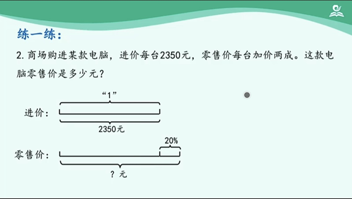
法一：2350+2350*20=2820
法二：2350*(1+20%)
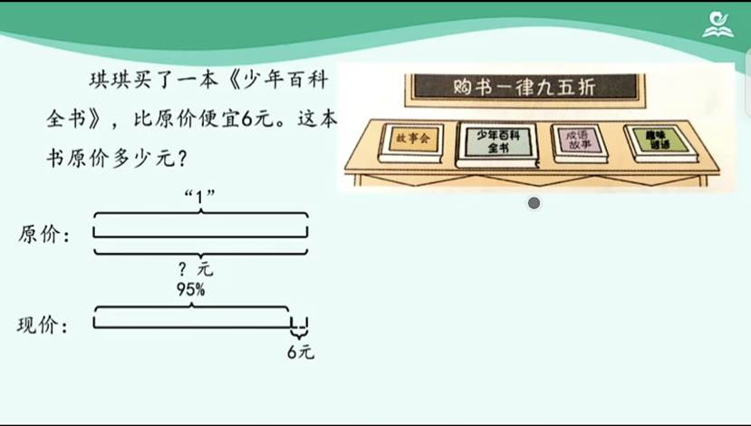
法一：6/(1-95%）
法二：
解：设《百科全书》原价为x元。
(1-95%)x
= 6
X = 120
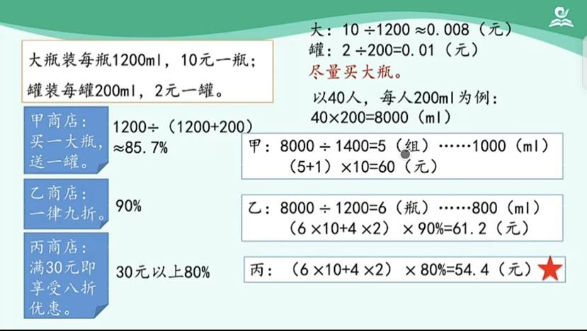
纳给国家。税收是国家收入的主要来源之一。国家用收来的税款发展经济、科技、教育、文化和国防等事业。因此，每个公民都有依法纳税的义务。
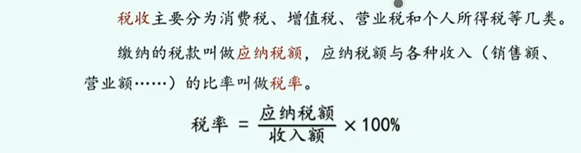
题1：三三月工资为7000元，扣除5000元个税免征额后的部分要按3%的税率缴个人所得税。他应缴多少元？
啥是个人所得税？
个人所得税是国家对本国公民、居住在本国境内的个人的所得和境外个人来源于本国的所得征收的一种所得税。
啥是个税免征额？
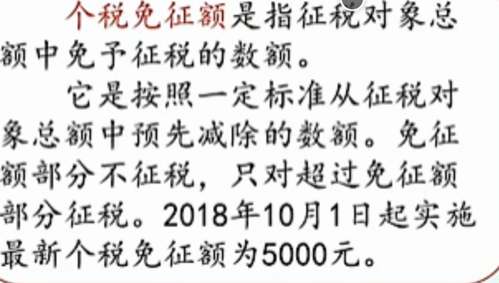
好了，开始做题
(7000-5000)*3%=60(元)
存入银行的叫本金；取款时银行多支付的钱叫做利息
利息与本金的比率就叫利率
算法
利率
= 利息/本金*100%
利息 = 本金*利率*存期
题：2019年利率表
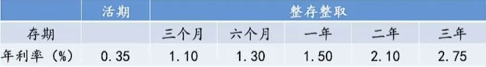
(1)2019年10月，三三把20000元存入银行2年，到期后，他可以取多少钱？
法一：20000*2.1%*2=840（元）
20000+840=20840（元）
法二：20000*(1+2.1*2)=20840（元）
题：三三经营的餐馆2020年1月的营业额为10万元，若按营业额的5%收取营业税，则三三应缴纳多少钱？税后营业额为多少元？
10-10*5%=9.5（万元）=95000（元）
圆柱
组成：
两个底面都是圆形且大小一致
以及一个侧面是曲面
高：圆柱两个底面之间的距离就是圆柱的高
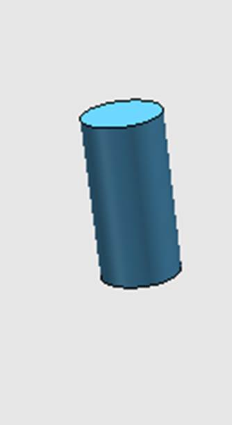
圆柱有无数条高。
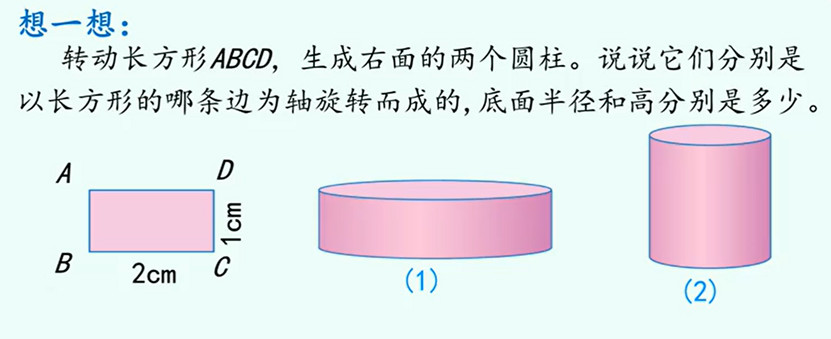
哎呀，这有什么好想的，下一题
深入♂研究
圆柱侧面展开是长方形
所以长方形的长 = 圆柱底面周长
所以宽 =
圆柱的高
万恶做题
题1：一个茶叶桶的侧面贴着标签纸，圆柱底面半径是5cm，高20cm。求该商标纸的长和宽各是多少cm
长 = 2*5*3.14=31.4cm
宽 = 20cm
梅开二度：
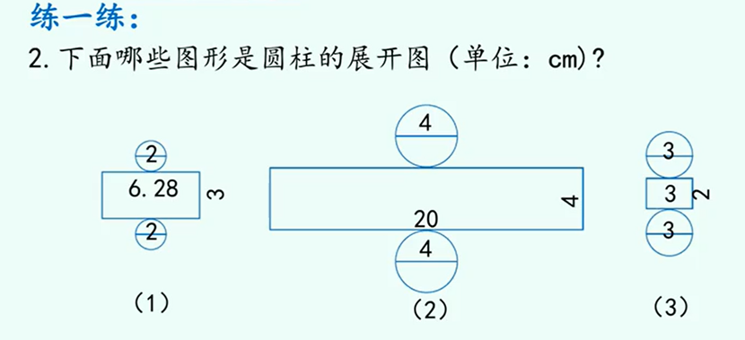
首先，我们看选项一，是，计算一下2*3.14=6.28
之后，我们看2，emmmmmmmm，错得离谱，懒得说了
最后，算了，这个更离谱
圆柱的表面积
定义：
太简单了我不想讲
包含的部分：
懒得说，看截图
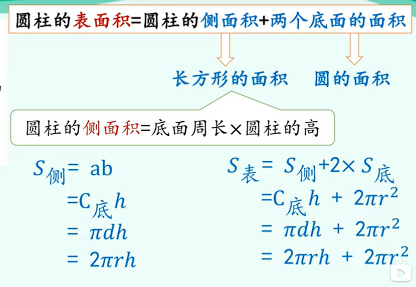
好了，继续做题
某茶叶筒侧面贴着广告，写了老三最帅，但是这是无关信息，底面半径为5cm，高20cm。该商标纸的面积为多少？（圆柱侧面积）
2*3.14*5*20
= 628（cm²）
一个圆顶厨师帽，高30cm，帽顶直径20cm。做这样的帽子，要多少平方厘米的布料？（保留整十位）
帽子的侧面积 = 20*3.14*30=1884
帽顶的面积 = 3.14*（20/2）=314
总面积 = 1884+314≈2200
（别问我为啥没写单位）:D
求侧面积：
底面周长为1.6，高0.7
1.6*0.7=1.12
求表面积：
底面半径3，高5
底面直径3*2=6
侧面积6*5=30
顶面积3*3*3.14*2=56.52
表面积 56.52+30=86.52
三三买了一卷卫生纸，但是他闲的无聊，想计算卫生纸第一圈的面积，你快来帮他罢！听说还可以领亲笔签名照，这么帅的人，免费送签名照，只因会难得！
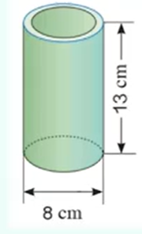
好了，不闹了，开始做题
8*3.14*13=326.56
圆柱的体积
定义：物体所占空间的大小叫物体的体积
计算方法：
圆柱的体积=底面积*高
高=圆柱的体积/底面积
底面积=圆柱的体积/高
为啥这样算？
若将圆柱的底面分成若干相等的扇形：
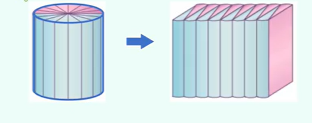
分的扇形越多，就越接近长方形。
分出来后，
长方形的底面积=圆柱的底面积
高
=圆柱的高
没错了，理论结束，实践开始
1.一根棒子，底面积为75，长90，它的体积是多少？
75*90=6750
2.李家庄挖了一口圆柱形水井，地面以下井深10，底面直径1。挖出的土有多少立方米？
(1/2)²*3.14*10=7.85
3.
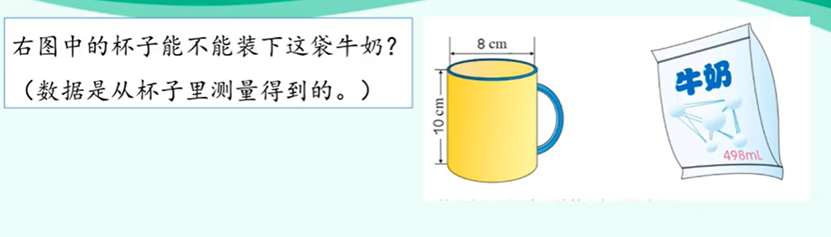
杯子的容积：(8/2)²*3.14*10=502.4
502.4>498
可以。
圆锥
圆锥的高：
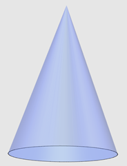
圆锥的各部分：
圆锥的底面是圆
圆锥的侧面是一个曲面
好的，我想你已经迫不及待要来做题了
B C

将这张图旋转后会得到什么样的图形？（沿BC边）
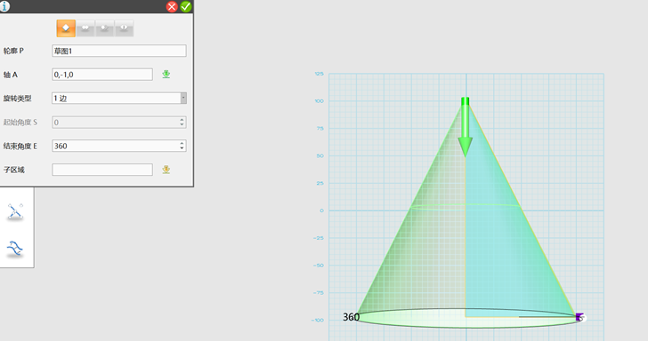
没错！就是一个圆锥
那肯定有大聪明要问了，体积怎么算呢？
先看一个结论：
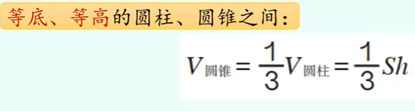
因此，我们就可以写出这样的公式：
1/3*底面积*高=圆柱的体积
比例
啥是比例？
表示两个比相等的式子叫做比例
好的，今天的正片有亿点点早
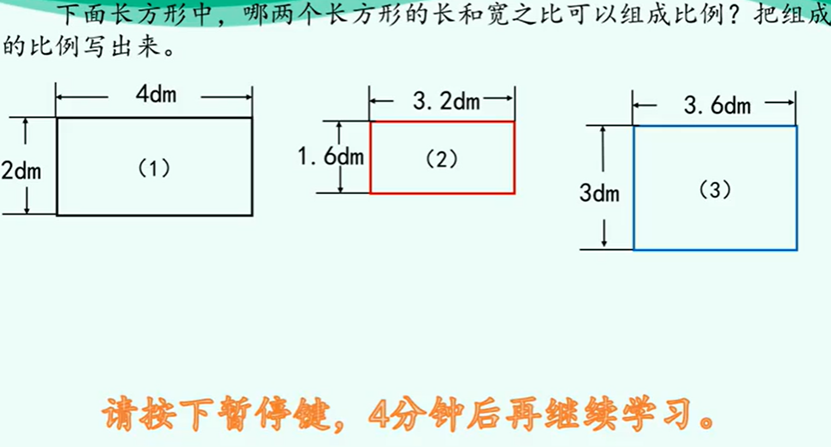
好，我们来一起交♂流一下（老师原话）罢！
一号：4 : 2= 2
二号：3.2 : 1.6= 2
三号：3.6 : 1.6= 2.25
所以，一号和二号的长和宽可以组成比例（4 : 2 = 3.2 : 1.6）
这题懒得打，看截图:(
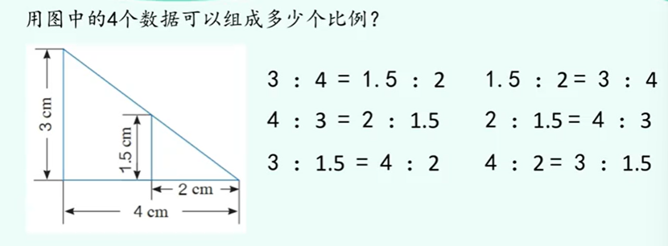
我知道，肯定会有人说了：啊，你这没有性质，肯定不保熟
啊，这不就来了
比例的性质
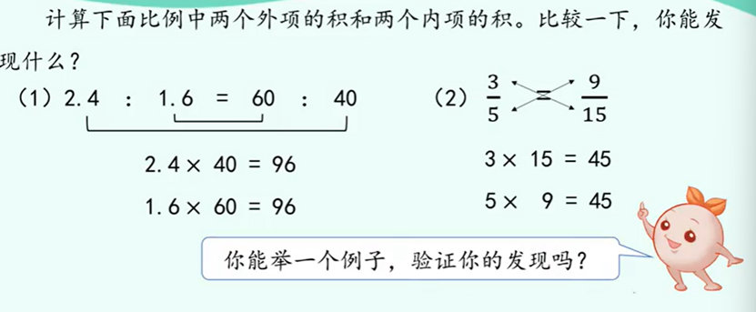
总结：
在比例中，两个外项的积等于两个内项的积。这叫做比例的基本性质
正片开始
三三承包了两块农田，面积分别为0.5公顷和0.8公顷，秋收时，两块水稻田的产量分别为3.75t和6t
(1)
两块水稻田的面积和产量之比，是否可以组成比例
(2)
若可以，请指出比例的内项和外项
先写比：3.75 : 0.5 6 : 0.8
判断：3.75*0.8=3
0.5*6=3
可以
组成比例：3.75
: 0.5 =6 : 0.8
解比例
啥是解比例？
根据比例的基本性质，如果已知比例中的任何三项，就可以求出这个比例中的另外一个未知项。求比例中的未知项，叫做求比例
正片开始
法国巴黎的埃菲尔铁塔高320m，北京世界公园内有一座埃菲尔铁塔的模型，它的高度与原塔的高度的比是1 : 10.这座塔高多少米？
解：设这座塔模型的高度为x m。
X : 320 = 1:10
10x = 320*1
X=320*1/10
X=32
或：x/320 = 1/10
X = 1/10*320
答：高32m
正比例和反比例
课前引入（废话时间）
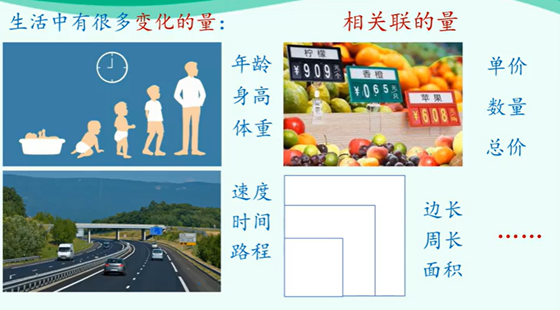
好了，不多bb
文具店有一种彩带，销售的数量与总价的关系如下表：
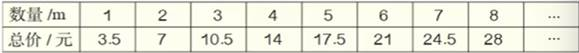
(1)
表中有哪两种量
数量；总价
(2)
总价是如何随数量变化而变化
数量扩大到原来的几倍，总价就扩大到原来的几倍
(3)
相应的总价与数量的比分别是多少？比值是多少
1 : 3.5
=
3.5
单价/数量 = 单价
像这样，两种关联的量，一种量的变化，另一种量也随之变化，如果这两种量中相对应的两个数比值一定，这两种量就叫成正比例的量，他们的关系叫做正比例关系
Emmmmm，折线图之类的我就不画了，等上课了听老师讲罢！
反比例
定义：
两种相关联的量，一种量变化，另一种量也随着变化，如果这两个数的乘积一定，这两种量就叫做成反比例的量，他们的关系叫做反比例关系。
字母表示方法：
xy = k
画图
这种东西等上课再听罢！
正片开始
1：你能举出生活中的反比例例子吗
比如：
三三要搬家，雇了一堆汽车，如果要求一天内完成，则需要运300t的货物，but，如果要求两天运完，则一次仅需运150t
比例尺：
啥是比例尺
一幅图上距离和实际距离的比，叫做这幅图的比例尺
算法（给我背！）
图上距离 ：实际距离 = 比例尺
注意：
有的时候（比如在绘制比较精细的设计图等），需要把零件的尺寸通过某种比放大，所以比例尺的前项比后项大属于正常现象！
在一般情况下，我们一般把比例尺的前项（后项）写成1
方法：
先算出一组图上距离与实际距离的对应值→统一长度单位→写比→化简
解决问题（完结撒花）
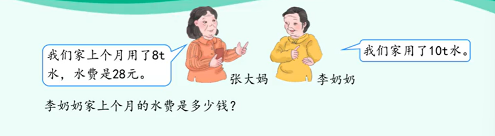
8 ：28 = 10 ：x
解： 8x = 280
X =
35
整活单元：自行车里的数学
作为整活单元，我就不细讲，各位兄弟们就将就着看吧
学习目的：
说白了就是研究奇奇怪怪的比
呐，干脆直接给你们看课本罢！
数学广角：抽屉原理（鸽巢问题）
兄弟们奥数班应该学过了罢，这种弱智题咱就算了吧
好了，恭喜你，已经学完了整本书，现在，你可以准备看其他的了！
哎哎哎，别走，数学书全套答案马上就来
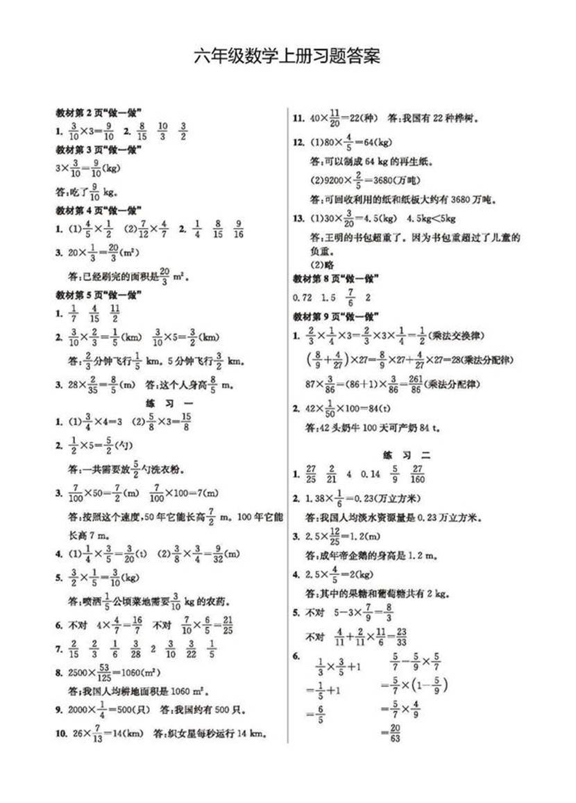
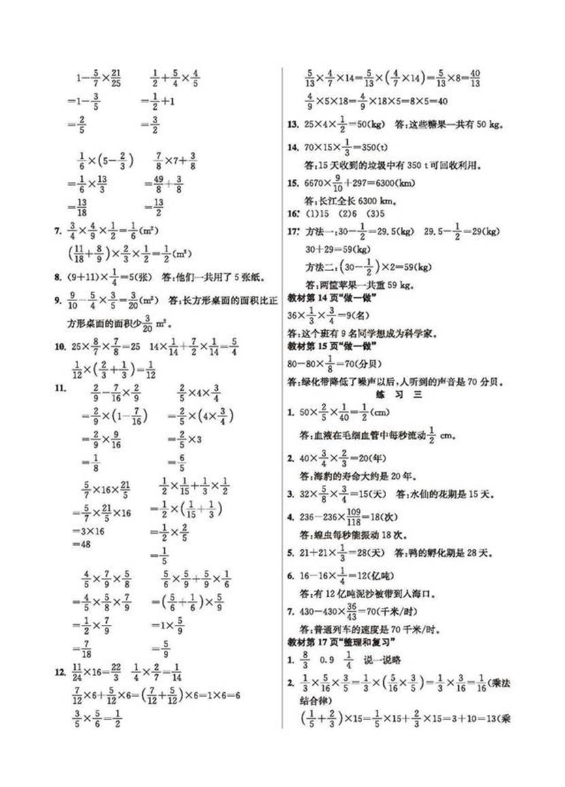
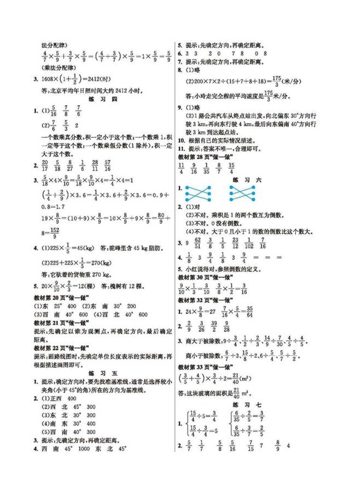
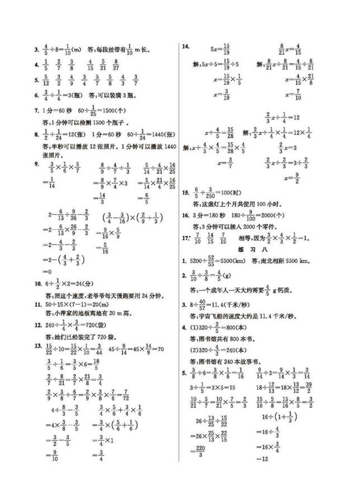
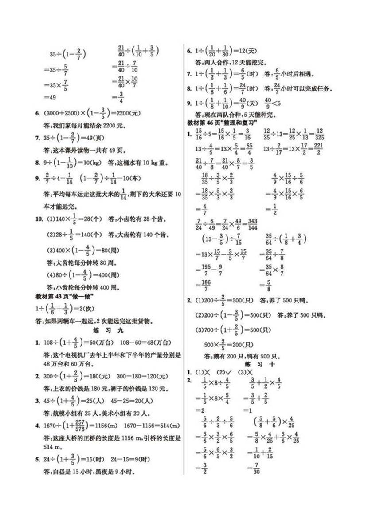
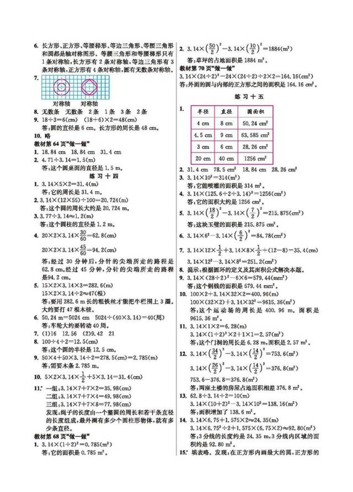
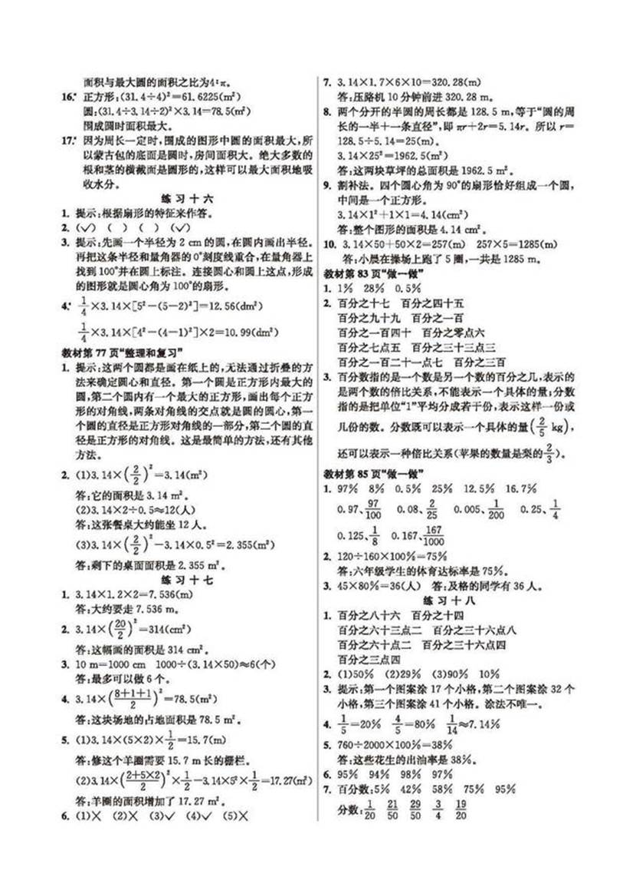 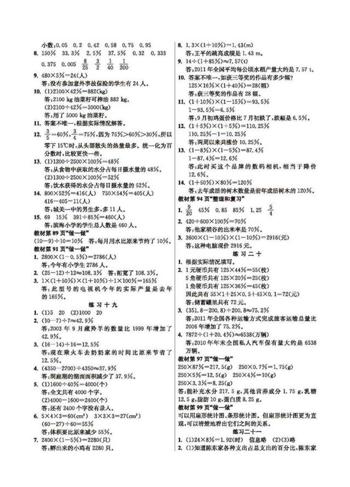 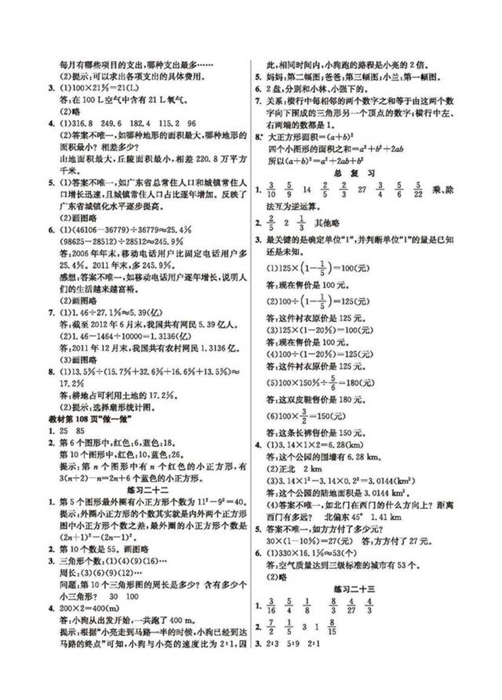 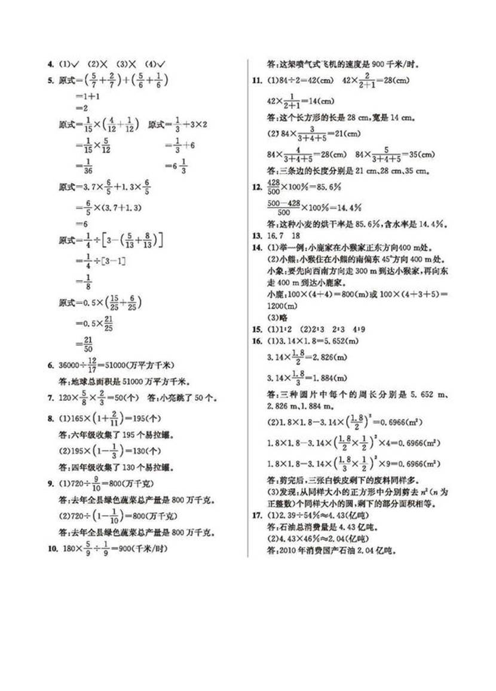